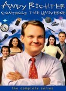

Andy Richter Controls the Universe
Stephen Klancher
...has seen 1
...has seen 0 hours
...has not seen 0.3 hours

Timeline
Most Recent:
Pilot
First Unseen:
Grief Counselor (# 2)
...has seen 1
...has seen 0 hours
...has not seen 0.3 hours
Timeline
Most Recent:
Pilot
First Unseen:
Grief Counselor (# 2)


We're All The Same, Only Different (2002) Airs on 2002-12-01
S2 - E1 of Andy Richter Controls the Universe
S2 - E1 of Andy Richter Controls the Universe
Saturday Early Evening Fever (2003) Airs on 2003-04-21
S2 - E13 of Andy Richter Controls the Universe
S2 - E13 of Andy Richter Controls the Universe